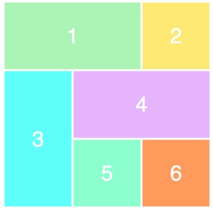

Що там у браузерів?

Велика кількість систем
побудови розмітки.

.wrapper {
display: grid;
}

.wrapper {
display: grid;
grid-template-columns: 100px 100px 100px;
grid-template-rows: 50px 50px;
}
See the Pen mKEoOg by Vladyslav Sanahurskyi (@sanahurskyi) on CodePen.
.grid-element {
grid-column-start: 3;
grid-column-end: 4;
grid-row-start: 2;
grid-row-end: 4;
}
See the Pen CSS Grid Layout - Simple by Nataliya Karatkova on CodePen.
.grid-element {
grid-column: 3 / 4;
grid-row: 2 / 4;
}
See the Pen CSS Grid Layout - Simple by Nataliya Karatkova on CodePen.
.grid-element {
grid-area: 2 / 3 / 4 / 4;
}
grid-row-startgrid-column-startgrid-row-endgrid-column-end
.grid-element {
grid-area: 2 / 3 / 4 / 4;
}
See the Pen CSS Grid Layout - Simple by Nataliya Karatkova on CodePen.
See the Pen mKEoOg by Vladyslav Sanahurskyi (@sanahurskyi) on CodePen.
autopx, rem, em, vh, vw і т. д.%frmax-content, min-content, minmax(min, max)1vh = 1% від висоти вікна. При зменшенні висоти вікна, зменшується ширина, висота, шрифт елемента.
fraction of available space - частка вільного простору
See the Pen CSS Grid Layout - fraction by Nataliya Karatkova on CodePen.
body {
display: grid;
grid-template-rows: auto
1fr
auto;
}
See the Pen CSS Grid Layout - Layout by Nataliya Karatkova on CodePen.
body {
display: grid;
grid-template-rows: auto
1fr
auto;
grid-template-areas: "header"
"main"
"footer";
}
See the Pen CSS Grid Layout - Layout by Nataliya Karatkova on CodePen.
header {
grid-area: header;
}
main {
grid-area: main;
}
footer {
grid-area: footer;
}
See the Pen CSS Grid Layout - Layout by Nataliya Karatkova on CodePen.
.container {
display: grid;
grid-gap: 5px;
grid-template-columns: repeat(12, 1fr);
grid-template-rows: auto 1fr auto;
grid-template-areas:
". h h h h h h h h h h ."
"c c c c c c c c c c m m"
". f f f f f f f f f f .";
}
.header {
grid-area: h;
}
.menu {
grid-area: m;
}
.content {
grid-area: c;
}
.footer {
grid-area: f;
}
@media screen and (max-width: 640px) {
.container {
grid-template-areas:
"m m m m m m h h h h h h"
"c c c c c c c c c c c c"
"f f f f f f f f f f f f";
}
}